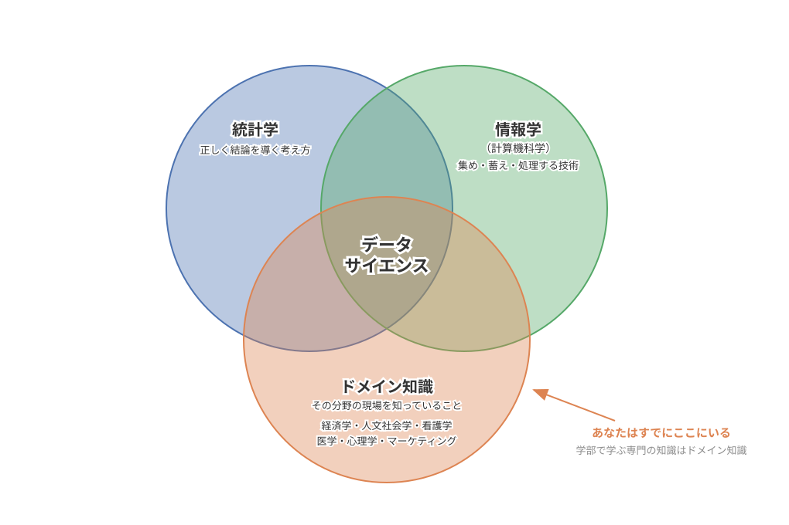
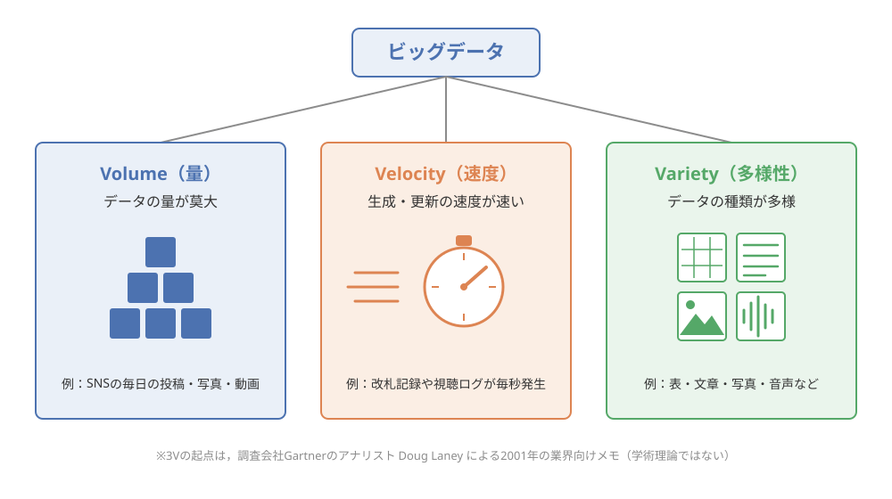
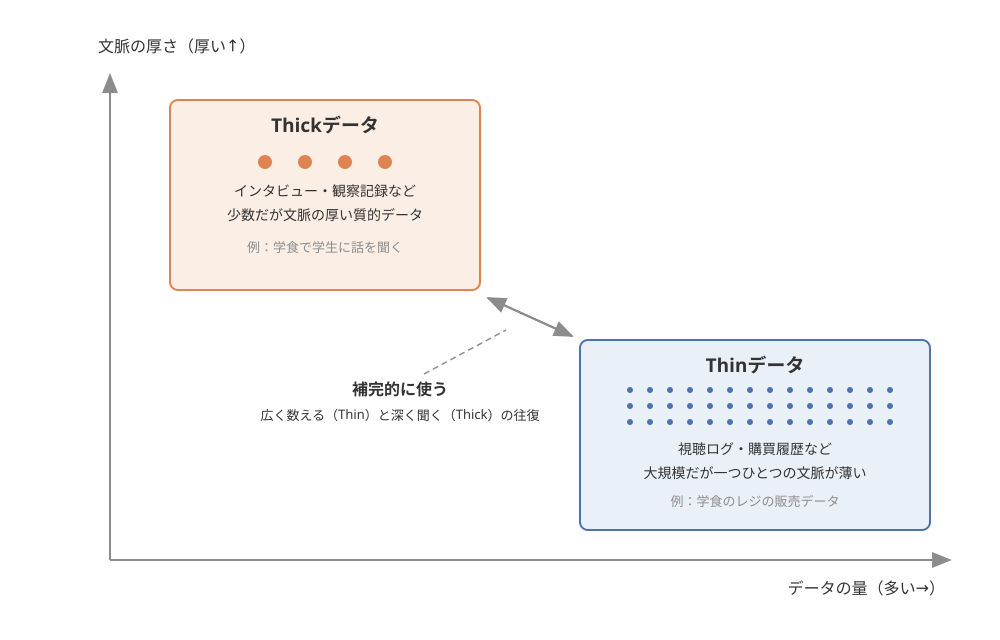
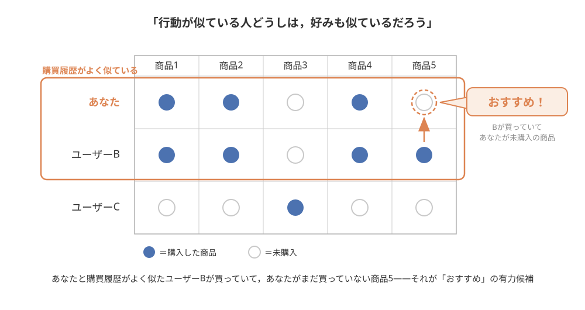
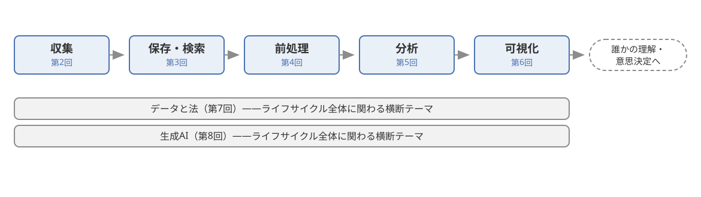

第1回：データサイエンスとは何か——ビッグデータとThick・Thinデータ#
この回で学ぶこと#
この回を学び終えると，次のことができるようになります．
データサイエンスの定義と，それが統計学・情報学・ドメイン知識にまたがる学際的な分野であることを説明できる
現代がデータ駆動型社会と呼ばれる背景を，医療・防災・マーケティング・交通などのAI・データ活用事例とともに説明できる
ビッグデータの特徴である3V（Volume・Velocity・Variety） と，ビッグデータの限界を説明できる
ThinデータとThickデータ（量的データと質的データ）の違いを理解し，両者を組み合わせる意義を身近な例で説明できる
本科目全体の地図となるデータのライフサイクルを描ける
導入：「おすすめ」はなぜ私の好みを知っているのか#
まず，みなさんの毎日を少しだけ振り返ってみましょう．
事例：ある大学1年生の朝
朝，スマートフォンのアラームで目を覚まし，ベッドの中で動画アプリを開くと，昨夜見ていたお笑い芸人の新しい動画が「おすすめ」の一番上に表示されています．通学中に地図アプリを開けば，「今日はいつもより電車が遅れています．到着は8時52分頃」と表示されます．昼休みにネットショッピングのアプリを開くと，先週なんとなく検索したスニーカーが「あなたへのおすすめ」に並んでいて，思わずドキッとします．夜，SNSを眺めていると，最近気になり始めた韓国のアイドルの投稿ばかりがタイムラインに流れてきます．
——なぜアプリは，あなたが誰にも話していないはずの「好み」や「予定」を知っているのでしょうか．
種明かしをすれば，アプリはあなたの心を読んでいるわけではありません．あなたが動画を最後まで見たか，途中で飛ばしたか，どの商品を何秒眺めたか，どの駅で乗り降りしたか——そうした行動の記録（データ） が毎日大量に蓄積され，それを分析することで「次にこの人が好みそうなもの」を予測しているのです．
つまり，みなさんは毎日，データを「使われる側」としてデータサイエンスの真っただ中で生活しています．そして大学を卒業して社会に出れば，今度は仕事の中でデータを「使う側」に回る場面が，文系・理系を問わず確実に増えていきます．この科目は，データを専門的に扱う人になるための科目ではありません．データがあふれる社会で，データと上手に，そして正しく付き合うための基礎体力——データサイエンス・リテラシー——を身につけるための科目です．
その第1回として，今回は「そもそもデータサイエンスとは何か」から話を始めましょう．
データサイエンスとは何か——定義と学際性#
データサイエンスの定義#
データサイエンス（data science）とは，一言でいえば，データから価値のある知見（知識・洞察）を引き出すための学問・技術の総称です．ここでいう「価値のある知見」とは，たとえば「この患者の画像には病気の兆候がありそうだ」「この地域は大雨のとき浸水の被害が出やすい」「この商品を好む人は次にあれを買うことが多い」といった，判断や行動につながる発見のことです．
「データサイエンス」という言葉自体は，実はそれほど新しいものではありません．統計学者のClevelandは2001年に，統計学の技術領域を計算機科学の方向へ拡張した分野として「データサイエンス」を構想する行動計画を発表しました [Cleveland, 2001]．これが，現在の意味での「データサイエンス」という語の歴史的な起点のひとつとされています．また，統計学者のDonohoは「50 Years of Data Science」という論文で，データサイエンスをめぐる定義の議論の歴史を批判的に整理し，データサイエンスは流行語ではなく統計学の長い発展の延長線上にあることを論じています [Donoho, 2017]．
では，昔からある統計学と何が違うのでしょうか．Dharは，データサイエンスを特徴づけるのはデータから一般化可能な知識を引き出し，予測につなげることであり，コンピュータで大規模なデータを自動的に処理する技術と統計学が結びついた点に新しさがあると論じています [Dhar, 2013]．紙と電卓の時代の統計学では扱えなかった規模と種類のデータを，コンピュータの力で処理できるようになったこと——これがデータサイエンスという新しい看板が必要になった大きな理由です．
学際性：統計学×情報学×ドメイン知識#
データサイエンスのもうひとつの大切な特徴は，学際性，すなわち複数の学問分野にまたがる性質です．データサイエンスは，おおまかに次の3つの要素の掛け算でできています．
要素 |
役割 |
例 |
|---|---|---|
統計学 |
データから正しく結論を導くための考え方 |
平均やばらつきの計算，偏りの見抜き方 |
情報学（計算機科学） |
大量のデータを集め・蓄え・処理する技術 |
プログラミング，データベース，機械学習 |
ドメイン知識 |
分析対象となる分野そのものの専門知識 |
医学，経済学，心理学，マーケティングの知識 |
3つ目のドメイン知識（domain knowledge）とは，「その分野の現場を知っていること」です．たとえばコンビニの売上データを分析するとき，統計の計算がいくら得意でも，「雨の日は来店客が減る」「給料日の後は高めの商品が売れる」といった商売の現場感覚がなければ，数字の変化の意味を読み取れませんし，そもそも「何を分析すべきか」という問いすら立てられません．実際，Caoはデータサイエンスを概観したサーベイ論文の中で，データサイエンスを統計学・情報学・計算・コミュニケーション・社会学・経営学などの交わり（交差領域） として定式化しています [Cao, 2017]．この3つの要素の重なりを図に表したのが 図 2 です．
{kind=link}

図 2 統計学×情報学×ドメイン知識の重なりとしてのデータサイエンス#
ここで，文系の学部に所属するみなさんに強調したいことがあります．この掛け算の構造は，データサイエンスが統計やプログラミングの専門家だけのものではないことを意味します．経済学部で学ぶ市場の知識も，人文社会学部で学ぶ人間や社会への洞察も，看護学部で学ぶ医療現場の知識も，すべてデータサイエンスに不可欠な「ドメイン知識」です．データの技術を持つ人と，現場を知る人が組んだとき，データサイエンスは初めて価値を生みます．みなさんが将来それぞれの分野で活躍するとき，データの専門家と対話し協働するための共通言語——それがこの科目で学ぶリテラシーです．
データ駆動型社会——なぜいまデータサイエンスが注目されるのか#
勘と経験から，データに基づく判断へ#
データサイエンスという言葉が生まれてから20年あまり，なぜ「いま」これほど注目されているのでしょうか．最大の理由は，社会で生み出されるデータの量が爆発的に増えたことです．スマートフォンの普及により，ほぼすべての人が「データを生み出す装置」を持ち歩くようになりました．SNSへの投稿，検索の履歴，電子マネーでの支払い，位置情報——さらに街や工場に設置された無数のセンサーやカメラも，休みなくデータを生み続けています．
こうして蓄積された大量のデータを分析し，勘や経験だけに頼らず，データという証拠に基づいて判断や意思決定を行う社会を，データ駆動型社会（data-driven society）と呼びます．「駆動」とは「動かす」という意味で，データが社会のさまざまな仕組みを動かす原動力になっている，ということです．たとえばベテラン店長の「そろそろおでんが売れる時期だ」という勘は貴重ですが，データ駆動型のコンビニチェーンでは，気温・曜日・過去の売上データから発注量を予測し，勘を裏づけたり修正したりします．勘と経験を捨てるのではなく，データで補強する——これがデータ駆動型社会の発想です．
社会におけるAI・データ活用事例#
データ駆動型社会の姿を具体的に実感するために，社会におけるAI・データ活用事例を4つの分野から見てみましょう．ここでのAI（人工知能）とは，大量のデータからパターンを学習して認識や予測を行うコンピュータプログラムのことだと，ひとまず理解しておいてください（AIの全体像は第10回「生成AIの基礎と知的活動への利用」で整理します）．
医療：画像診断支援．X線・CT・MRIなどの医用画像から，病変の疑いのある箇所を自動的に見つけ出してマークし，医師の診断を支援するAIの研究・実用化が進んでいます．大量の画像データから病変のパターンを学習する深層学習（ディープラーニング）と呼ばれる技術がこの分野を大きく前進させ，2017年の時点ですでに300を超える研究をまとめたサーベイ論文が発表されるほど活発な分野になっています [Litjens and others, 2017]．医師が見落としを防ぐ「もう一組の目」として期待されています．
防災：被害予測．過去の災害の記録，気象データ，地形や土地利用のデータを組み合わせて，「大雨のときどの地域が浸水しやすいか」「地震のときどこで建物被害が大きくなりそうか」を予測する取り組みが進んでいます．予測結果はハザードマップや避難計画に活かされ，災害から人の命を守るためにデータが使われています．
マーケティング：推薦システム．導入で見た「おすすめ」機能です．ユーザーの閲覧・購買履歴のデータから好みを推測し，一人ひとりに合った商品や動画を提示します．この回の後半（活用事例）で詳しく取り上げます．
交通：需要予測．鉄道・バスの混雑予測，地図アプリの到着時刻予測，タクシーの配車最適化など，「いつ・どこで・どれだけ人が移動するか」をデータから予測する技術です．過去の利用実績や位置情報データをもとに需要を先読みすることで，混雑の緩和や輸送の効率化につながっています．
これらの事例に共通するのは，どれも大量のデータがなければ成り立たないという点です．では，その「大量のデータ」——ビッグデータとは，具体的にどのようなものなのでしょうか．
ビッグデータと3V——その力と限界#
ビッグデータの3V：Volume・Velocity・Variety#
ビッグデータ（big data）とは，従来の技術では扱いきれないほど大規模で多様なデータの総称です．ただし「何件以上ならビッグデータ」といった明確な線引きがあるわけではなく，その特徴は3Vと呼ばれる3つの性質で説明されるのが一般的です．
Volume（量）：データの量が莫大であること．たとえば，世界中のSNSには毎日数えきれないほどの投稿・写真・動画がアップロードされています．一人の人間が一生かけても読み切れない量のデータが，毎日新しく生まれています．
Velocity（速度）：データが生成・更新される速度が速いこと．電車のICカードの改札記録や動画の視聴ログは，一日の終わりにまとめて記録されるのではなく，毎秒リアルタイムに発生し続けます．
Variety（多様性）：データの種類が多様であること．数値の表だけでなく，文章・写真・動画・音声・位置情報など，形式の異なるさまざまなデータが含まれます．表の形に整っていないこうしたデータは非構造化データと呼ばれ，その扱いは第2回「データの収集」と第3回「データの保存と検索」であらためて登場します．
この3つの特徴をまとめたのが 図 3 です．
{kind=link}

図 3 ビッグデータの特徴を表す3V：Volume（量）・Velocity（速度）・Variety（多様性）#
ここでひとつ，出どころについて正直に述べておきます．この3Vという整理は，学術論文で提唱されたものではありません．起点は，調査会社Gartnerのアナリストであった Doug Laney が2001年に書いた業界向けのメモ（レポート）です．つまり3Vは，ビジネスの現場から生まれた「実務家の整理」が広く定着したものであり，学術的な検証を経た理論ではないことに注意してください．とはいえ，ビッグデータの特徴を直感的につかむ枠組みとしては現在でも広く使われています．
注釈
3Vには後から，Veracity（真実性：データは信頼できるか）や Value（価値：データから価値を引き出せるか）などを加えた「5V」「7V」といった拡張版も提案されています．これらの拡張を体系的に整理した学術サーベイ（What Is (Not) Big Data Based on Its 7Vs Challenges: A Survey，オープンアクセス）もありますので，興味のある人は読んでみてください．
ビッグデータの限界#
ビッグデータは強力ですが，万能ではありません．ここでは代表的な限界を2つ押さえておきましょう．
警告
限界1：量が多くても，偏りは消えない．「データが大量にあれば結論は正しくなる」と思いがちですが，これは誤解です．たとえばSNSの投稿を何億件分析しても，そこに含まれるのは「SNSを使う人」の声だけで，SNSを使わない人々の意見は最初から抜け落ちています．集め方が偏っていれば，データがどれだけ大量でも結論は歪みます．この「集め方の偏り」の怖さは，第2回「データの収集」で歴史的な失敗例とともに詳しく学びます．
限界2：「何が起きているか」は分かっても，「なぜか」は分からない．行動ログのようなビッグデータは，「商品Aの売上が先月から30%落ちた」という事実は正確に教えてくれます．しかし，「なぜ落ちたのか」——飽きられたのか，競合に流れたのか，SNSで悪い評判が立ったのか——という理由までは，数字だけからは読み取れないことが多いのです．
この「限界2」を乗り越えるヒントが，次に紹介するThickデータという考え方です．
Thinデータ・Thickデータ——数字の向こう側にある「なぜ」#
量的データと質的データ#
準備として，データの2つの大きな分類を導入します．量的データ（quantitative data）とは，売上金額・気温・視聴回数のように数値で表されるデータです．一方，質的データ（qualitative data）とは，インタビューの発言・アンケートの自由記述・観察の記録のように，数値では表しきれない，言葉や記述によるデータです．たとえばレビューサイトの「星4.2」は量的データ，「味は良いが店員さんの対応が残念だった」というレビュー本文は質的データです．星の数は集計や比較が簡単ですが，「なぜその点数なのか」は本文を読まなければ分かりません．この2つの分類は，第4回「データの前処理」で「変数の型・尺度水準」としてより詳しく学びます．
Thinデータ・Thickデータ#
この量と質の対比を，ビッグデータの文脈で捉え直したのがThinデータ（thin data：薄いデータ）とThickデータ（thick data：厚いデータ）という対比です．
Thinデータとは，行動ログのように大規模で量的だが，一つひとつの記録が持つ文脈（背景情報）の薄いデータです．「ユーザー123が21時05分に動画Xを30秒で離脱した」という記録は正確ですが，その人がなぜ離脱したのか——つまらなかったのか，電車が駅に着いただけなのか——は記録されていません．
Thickデータとは，インタビューや現場での観察から得られる，少数だが文脈の厚い質的データです．人々の行動の背後にある感情・動機・生活の事情まで含めて記録するため，件数は少なくても「なぜ」に迫ることができます．
この対比を「データの量」と「文脈の厚さ」という2つの軸の上に整理したのが 図 4 です．
{kind=link}

図 4 データの量と文脈の厚さから見たThinデータとThickデータの補完関係#
このThickデータという概念を広めた中心人物が，エスノグラファー（人々の生活に入り込んで観察する文化人類学的な調査の専門家）のTricia Wangです．彼女は「Why Big Data Needs Thick Data（なぜビッグデータにはThickデータが必要か）」という記事で，ビッグデータ偏重の危うさを指摘しました [Wang, 2013]．なお，この記事は解説記事（ブログ記事）であり，査読を経た学術論文ではありません．概念の由来として紹介しつつ，学術的な裏づけとしては，ビッグデータ（Thin）とThickデータを組み合わせる方法論を論じた査読論文 [Bornakke and Due, 2018] を併せて参照してください．
事例：携帯電話メーカーが見落とした「数字にならない兆し」
Wangが自身の記事などで紹介している有名なエピソードがあります [Wang, 2013]．彼女は2009年頃，中国で人々の生活に密着する現地調査を行い，低所得の若者たちが生活を切り詰めてでも高価なスマートフォンを欲しがっているという強い兆しをつかみました．当時世界最大の携帯電話メーカーだったNokiaにこの発見を伝えましたが，同社は自社が持つ大規模な量的データ（当時の調査データ）にその傾向が表れていないことなどを理由に，この小さなサンプルからの知見を重視しませんでした．その後のスマートフォンへの急激な市場変化とNokiaの携帯電話事業の凋落は，みなさんも知っての通りです．
大量のThinデータに表れない変化の芽が，少数のThickデータには表れていた——Wangはこの経験から，「ビッグデータはThickデータと組み合わせてこそ真価を発揮する」と主張しています．
注釈
「Thick」という言葉は，文化人類学者Clifford Geertzの「厚い記述（thick description）」——人々の行動を，その行動が持つ意味や文脈まで含めて分厚く記述するという考え方——に由来します．データサイエンスの最先端の議論に，文化人類学という人文学の概念が流れ込んでいるのです．
組み合わせてこそ力になる#
大切なのは，ThinデータとThickデータのどちらが優れているかではなく，両者は補完関係にあるということです．Thinデータ（ビッグデータ）は「何が・どれだけ起きているか」を広く正確に教えてくれ，Thickデータは「なぜ起きているのか」を深く教えてくれます．BornakkeとDueは，大規模な行動データと現場観察・インタビューのデータを行き来しながら分析する「Big–Thick Blending」という方法を提案し，実際の調査事例でその効果を示しています [Bornakke and Due, 2018]．
たとえば大学の学食で考えてみましょう．レジの販売データ（Thin）を分析すれば「金曜の唐揚げ定食の売上が落ちている」ことは分かります．しかし理由を知るには，学生に話を聞く（Thick）必要があります．「金曜は3限が空きコマだから学外に食べに行く」「近くに新しいラーメン店ができた」——そんな声は，レジのデータには決して記録されていません．逆に，数人の声だけで「唐揚げ定食は不人気だ」と結論づけるのも危険で，販売データ全体で確かめる必要があります．広く数える（Thin）と深く聞く（Thick）の往復が，データから正しい判断を導くコツなのです．
ここには文系のみなさんへの大切なメッセージが含まれています．インタビュー・フィールドワーク・文献の読解といった，人文・社会科学で磨かれてきた「質的に理解する力」は，データ駆動型社会において古びるどころか，ビッグデータの弱点を補う武器としてますます重要になっています．データサイエンスは，数字が得意な人だけの舞台ではありません．
活用事例：ネットショッピング・動画配信を支える推薦システム#
この回の締めくくりに，データ駆動型社会を象徴する活用事例として，導入でも触れた推薦システム（recommender system）を取り上げます．
事例：「あなたへのおすすめ」の裏側
ネットショッピングの「この商品を買った人はこんな商品も買っています」，動画配信サービスの「あなたにおすすめの作品」——これらは推薦システムと呼ばれる技術の産物です．基本のアイデアは意外なほど素朴で，「行動が似ている人どうしは，好みも似ているだろう」というものです．あなたと購買履歴がよく似たユーザーたちが買っていて，あなたがまだ買っていない商品——それが「おすすめ」の有力候補になります．
このとき威力を発揮するのが，まさにビッグデータの3Vです．膨大なユーザーの行動履歴（Volume）が，クリックや視聴のたびにリアルタイムで蓄積され（Velocity），商品情報・レビュー・画像など多様なデータ（Variety）と組み合わされて，一人ひとりへの「おすすめ」が計算されています．
近年は，会員登録していないユーザーへの推薦や，そのとき・その場の興味の変化への対応のために，「直前の閲覧の流れ（セッション）」だけから次の興味を予測するセッションベース推薦という技術も研究されています [Wang and others, 2021]．「さっきから急にキャンプ用品ばかり見ている」という短期的な行動の流れから，「今この人はキャンプに関心がある」と読み取るわけです．
一方で，推薦システムには課題もあります．行動履歴という個人に関わるデータを扱う以上，プライバシーへの配慮が欠かせません（第9回「データと法——情報法の基礎」で扱います）．また，好みに合うものばかりが表示されることで視野が狭くなる懸念も指摘されています．便利さの裏側にある仕組みと課題の両方を知っておくことが，データ駆動型社会を生きるリテラシーです．
この「あなたと購買履歴がよく似たユーザーが買っていて，あなたがまだ買っていない商品」を見つける仕組みを模式的に表したのが 図 5 です．
{kind=link}

図 5 推薦システムの基本のアイデア：「行動が似ている人どうしは，好みも似ているだろう」#
まとめ#
この回の要点#
データサイエンスとは，データから価値ある知見を引き出す学問・技術の総称であり，統計学×情報学×ドメイン知識の学際性を持つ．ドメイン知識という要素があるからこそ，あらゆる分野の人に関わりがある [Cao, 2017, Cleveland, 2001, Dhar, 2013, Donoho, 2017]
データという証拠に基づいて判断するデータ駆動型社会が到来し，医療（画像診断支援）・防災（被害予測）・マーケティング（推薦システム）・交通（需要予測）など，AI・データ活用事例が生活の隅々に広がっている
ビッグデータの特徴は3V（Volume・Velocity・Variety） で整理される（起点はGartnerのDoug Laneyによる2001年の業界メモであり，学術理論ではない）．ただし，量が多くても偏りは消えず，「なぜ」も分からないという限界がある
大規模だが文脈の薄いThinデータ（量的データ）と，少数だが文脈の厚いThickデータ（質的データ）は補完関係にあり，組み合わせてこそ力になる [Bornakke and Due, 2018, Wang, 2013]
本科目の地図：データのライフサイクル#
最後に，本科目全体の地図を示します．データは，集めれば終わりではありません．データが生まれてから価値を生むまでには，収集する → 保存・検索する → 前処理する（分析できる形に整える）→ 分析する → 可視化して伝えるという一連の流れがあります．この流れをデータのライフサイクル（data life cycle）と呼びます．「ライフサイクル」とは生き物の一生になぞらえた言葉で，データにも誕生（収集）から活躍（分析・可視化）までの一生がある，というイメージです．どの段階でつまずいても——偏った集め方をしても，ずさんに保存しても，汚れたまま分析しても，誤解を招くグラフで伝えても——データは正しい価値を生みません．だからこそ本科目では，このライフサイクルを1段階ずつ順にたどります．この流れと各回の対応を1枚の地図にしたのが 図 6 です．
{kind=link}

図 6 本科目の地図：データのライフサイクルと各回の対応#
回 |
ライフサイクルの段階 |
内容 |
|---|---|---|
収集 |
データはどこから来るのか．集め方が結果を歪める怖さ |
|
保存・検索 |
データを「貯めて引き出せる」資産にする仕組み（データベース） |
|
前処理 |
汚れた現実のデータを，分析できる形に整える |
|
分析I |
データを要約し，関係を読む．相関と因果の区別 |
|
分析II |
一部のデータから全体を推し量る（推測統計の入口） |
|
可視化 |
分析結果を正しく伝える．「だますグラフ」を見抜く |
|
発展：機械学習 |
AIはどう学ぶのか．予測の仕組みと落とし穴 |
|
横断テーマ：法 |
データ利活用を支えるルール（個人情報・著作権） |
|
横断テーマ：生成AI |
生成AIの仕組みと，大学での適切な使い方 |
第8〜10回は，ライフサイクルの特定の段階ではなく，その全体に関わる発展・横断的なテーマです．データから学ぶAIの仕組み（機械学習），データを集めて使うためのルール（法），そしてデータサイエンスと急速に融合しつつある生成AIを扱います．
次回の第2回「データの収集」では，ライフサイクルの出発点である「収集」を扱います．今回「量が多くても偏りは消えない」と述べた，その偏りが実際に引き起こした歴史的な大失敗の物語から始めましょう．
確認問題#
問1． データサイエンスの学際性を構成する3つの要素を挙げ，そのうち「ドメイン知識」がなぜ必要なのかを，身近な例を1つ挙げて説明してください．
解答と解説
3つの要素は，統計学（データから正しく結論を導く考え方），情報学（計算機科学）（データを集め・蓄え・処理する技術），ドメイン知識（分析対象分野の専門知識）です．
ドメイン知識が必要な理由は，統計や情報の技術だけでは，データの数字が現場で何を意味するのかを解釈できず，そもそも「何を分析すべきか」という問いも立てられないからです．例：コンビニの売上分析では「雨の日は客が減る」「給料日後は高い商品が売れる」といった商売の現場感覚がなければ，売上の変動の意味を読み違えてしまいます．学食・アルバイト先・部活動など，自分の知っている現場に即した例が挙げられていれば正解です．
問2．（事例判断型） あるカフェチェーンが，アプリの購買履歴データ（数百万件）を分析したところ，新発売のドリンクの売上が発売2週目から急落していることが分かりました．しかし，購買データをいくら分析しても「なぜ売れなくなったのか」は分かりませんでした．この会社は次に何をすべきでしょうか．ThinデータとThickデータという言葉を使って提案してください．
解答と解説
購買履歴データは，大規模で正確に「何が起きたか」を教えてくれますが，一件一件の文脈が薄いThinデータです．売上急落という事実は分かっても，その理由（味への不満か，価格か，SNSでの評判か，単なる話題性の一巡か）は記録されていません．
そこで次にすべきなのは，Thickデータの収集です．具体的には，店頭でお客さんにインタビューする，SNS上の感想の書き込みを読む，アンケートの自由記述欄を設ける，店舗で購入の様子を観察する，といった質的な調査です．たとえば「最初は話題で買ったが，甘すぎて2回目はない」という声が集まれば，急落の理由の仮説が立ちます．そのうえで，仮説が全体に当てはまるかをThinデータ（購買データや大規模アンケート）で再確認する——このように広く数える（Thin）と深く聞く（Thick）を往復することが適切な進め方です．どちらか一方だけで結論づけない点まで書けていれば，十分な解答です．
問3． 次の(a)〜(d)のデータを，Thinデータ（量的・文脈が薄い）に近いものとThickデータ（質的・文脈が厚い）に近いものに分類してください．
(a) 動画配信サービスに記録された全ユーザーの視聴開始・停止時刻のログ (b) 学生10人に1時間ずつ行った「動画サービスの使い方」についてのインタビュー記録 (c) レビューサイトの星の数（5段階評価）の集計値 (d) レビューサイトに書き込まれた感想の本文
解答と解説
Thinデータに近いもの：(a)・(c)．どちらも数値として大量に集計・比較できる量的データですが，一つひとつの記録から「なぜそうしたのか・なぜその点数なのか」という背景は読み取れません．
Thickデータに近いもの：(b)・(d)．件数は少なくても，利用の動機や不満の理由といった文脈が言葉で記録されている質的データです．
なお，(d)のレビュー本文のように，Thickデータ的な性質を持つデータが大量に集まる場合もあります．ThinとThickはきれいに二分できる分類というより，「文脈の厚さ」という程度の違いを捉えるための対比だと理解しておきましょう．
さらに学ぶために#
この回のテーマをより深く知りたい人のための文献です．いきなり原典を読むのは大変なので，【事例】→【解説・サーベイ】→【原典】の順に手を伸ばすのがおすすめです．
【原典】Cleveland, W. S., "Data Science: An Action Plan for Expanding the Technical Areas of the Field of Statistics," International Statistical Review, 69(1), 2001. https://doi.org/10.1111/j.1751-5823.2001.tb00477.x ——「データサイエンス」という語を統計学の拡張分野として構想した歴史的起点の論文．
【解説・サーベイ】Donoho, D., "50 Years of Data Science," Journal of Computational and Graphical Statistics, 26(4), 2017. https://doi.org/10.1080/10618600.2017.1384734 ——データサイエンスの定義をめぐる半世紀の議論を批判的に整理した読み応えのある論説．
【解説・サーベイ】Dhar, V., "Data Science and Prediction," Communications of the ACM, 56(12), 2013. https://doi.org/10.1145/2500499 ——「なぜ統計学に加えて新しい名前が必要か」を予測の観点から論じた解説記事．
【解説・サーベイ】Cao, L., "Data Science: A Comprehensive Overview," ACM Computing Surveys, 50(3), 2017. https://doi.org/10.1145/3076253 ——データサイエンスの学際性を体系的に定式化した包括的サーベイ．
【解説・サーベイ】"What Is (Not) Big Data Based on Its 7Vs Challenges: A Survey," Big Data and Cognitive Computing, 6(4), 158, 2022.（オープンアクセス）全文：https://doi.org/10.3390/bdcc6040158 ——ビッグデータの3Vから7Vへの拡張を体系的に整理したサーベイ．
【解説・サーベイ】Wang, T., "Why Big Data Needs Thick Data," Ethnography Matters, 2013.（解説記事．査読論文ではない）全文：https://ethnographymatters.net/blog/2013/05/13/big-data-needs-thick-data/ ——Thickデータという概念を広めた，学生にも読みやすい英文の解説記事．
【原典】Bornakke, T. and Due, B. L., "Big–Thick Blending: A Method for Mixing Analytical Insights from Big and Thick Data Sources," Big Data & Society, 5(1), 2018.（オープンアクセス）全文：https://doi.org/10.1177/2053951718765026 ——ビッグデータとThickデータを組み合わせる方法論を提案した査読論文．
【事例】Litjens, G. et al., "A Survey on Deep Learning in Medical Image Analysis," Medical Image Analysis, 42, 2017.（arXiv版オープンアクセス）全文：https://arxiv.org/abs/1702.05747 ——医療分野の画像診断支援AIの研究を300件以上まとめたサーベイ．
【事例】Wang, S. et al., "A Survey on Session-based Recommender Systems," ACM Computing Surveys, 54(7), 2021. https://doi.org/10.1145/3465401 ——推薦システムの最前線であるセッションベース推薦のサーベイ．